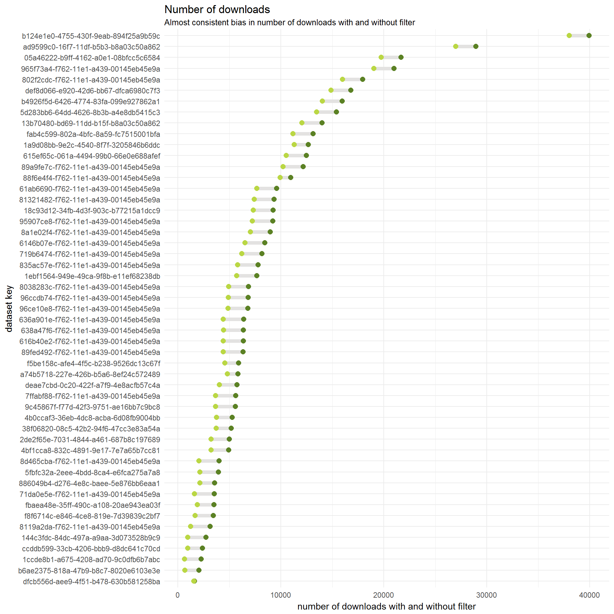

Dataset Downloads
Datasets at gbif are often downloaded through the web interface, or through the api (via rgbif ect.). When a dataset is downloaded, this information is stored in a registry table called occurrence_download.
Users can place various filters on the data in order to limit the number of records returned. As the occurrence index is currently a 447 GB csv, most users want to use a filter.
Types of filters
There are many ways that a user can filter data. The types and combinations of filters are almost limitless. Below I describe some of the most common filters:
1. TAXON_KEY
This is one of the most common filters users place on the gbif occurrence index. Users can either choose one or many taxon names to filter the data, and users can choose any taxon rank they want (species, genus, family, kingdom ect).
2. COUNTRY
Here users can return records only from a certain country. This is the country the user searched and not where user is searching from.
3. HAS_GEOSPATIAL_ISSUE
Here users can specify that they want occurrence records without some interpreted error.
4. HAS_COORDINATE
Here users can say that they want occurrence records that have coordinates.
5. No Filter
Finally, a surprising number of users never put any filter and instead request to download the entire occurrence index. In the overwhelming majority of cases, we have to assume these users have done this by mistake.
Total monthly downloads
Here I plot the total monthly downloads for various popular filters.
Two peaks in total downloads stand out:
- Mar 2014
- Sep 2016
The Sep 2016 peak seems to be explained by high DATASET_KEY downloads. Both the Mar 2014 and Sep 2016 peaks are well explained by the top users. Top users in this graph are all the downloads generated by the top 3 most active users on GBIF. These users generate downloads in the 1000s and are most likely to be automated downloads generated internally.
One interesting detail is that while No Filter Used is not used very often it accounts for more than 500 billion occurrence records downloaded.
Finally, if we look at the number of unique users (un-select everything else to see in isolation), we see that the number of individuals making downloads on GBIF has been increasing steadily with some perhaps interesting cyclical patterns.
Global top filter combinations
Here are the top global filter combinations. Most downloads are generated using a TAXON_KEY filter or some variation including a TAXON_KEY. DATASET_KEY likely has such a high position in this graph because most automated downloads at GBIF are generated using dataset keys. As we saw in the previous graphic, over 12k downloads were generated automatically using a dataset key filter on Sep 2016.

Number of records returned
The number of occurrence records returned for a download request varies depending on the filter. Not suprisingly the largest download requests occur when the user has simply not used a filter (No Filter). The second largest requests come from users simply searching for records with coordinates and without issues (HAS_COORDINATE + HAS_GEOSPATIAL_ISSUE). Additionally, many large requests come from users entering a TAXON_KEY filter. For this dataset AntWeb it is probably users searching for Insecta or Animalia.
Consistent bias in total downloads with and without filter
From the plot below we see that the bias is fairly consistent, since choosing to download the entire dataset gives 1 extra download to every dataset in gbif during that time. So it probably will not change the relatively ranking of the download statistics if we include or exclude large-grab filters.
Interestingly we see that some datasets only get downloaded when no filter is used, which is seen at the bottom of this graph.
